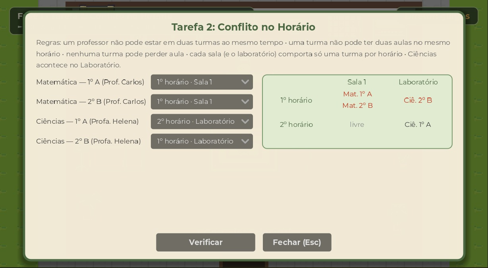
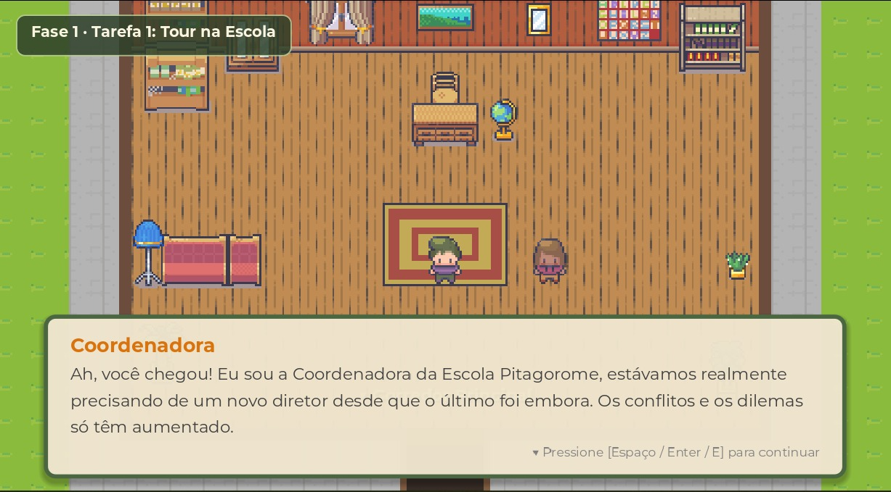
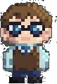

Um dia de cada vez.
Um problema por vez.
Você é o novo diretor da Escola Pitagorome. Organize a rotina, ouça os conflitos e resolva tudo com matemática.
Matemática que acontece na diretoria
PITAGOROME é um jogo educativo de matemática e administração escolar, feito no Instituto Federal de São Paulo. O jogador assume o papel de diretor(a) e participa de situações do dia a dia da escola: explora ambientes, conversa com personagens e resolve desafios matemáticos.
A matemática não vem em lista de exercícios. Ela aparece como problema real: um horário duplicado, um cadeado sem senha, uma máquina de refrigerante que cobra de um jeito estranho.

A Escola Pitagorome
O diretor nunca parou em um emprego. Foi vendedor, monitor de museu e animador de festa vestido de triângulo. Ganhou fama na cidade resolvendo problemas pequenos, até que uma carta chegou: a Escola Pitagorome procurava um novo diretor. O anterior havia desistido após três dias.
Ele aceitou pelo café grátis. No portão, dois alunos se acusavam de colar na prova de matemática. Foi quando percebeu que talvez o antigo diretor tivesse um ponto.
O ano tem três trimestres. Em cada um, novos problemas pedem decisão, e a Coordenadora está sempre por perto para ajudar.

Quem você encontra
- CoCoordenadora
Apresenta a escola, acompanha o tour e está sempre disponível quando você se sentir perdido.
- ZaZelador
Guarda as coisas em segurança, e depois esquece onde. Deixa pistas.

Professor de matemáticaOferece ajuda, mas avisa que terá um preço.
- CaCantineira
Dona da cantina e do refeitório, garante que contou tudo direitinho.
- SeSecretária
Lida com formulários e documentos da escola.
- InInspetor
Vigia os corredores e confisca o que voa.
Como se joga
Você escolhe nome e aparência, percorre a escola em visão de cima e conversa com quem aparece. Quando surge um problema, ele vira um desafio: um armário para abrir, uma turma para organizar, um preço para descobrir.
O jogo se divide em três fases, uma por trimestre, com 15 tarefas no roteiro.


Lógica e Organização
- Tour na Escolaconhecer os ambientes
- Conflito no Horáriológica organizacional
- O Cofre da Escolalógica e combinatória
- Quem Está Matando Aula?raciocínio lógico
- O Ônibus da Excursãodistribuição com restrições
Equações, Proporções e Probabilidade
- O Troféu Desaparecidoequação de 1º grau
- Figurinhasproporções
- O Gerador de Emergênciaequações
- As Mesas do Refeitórioequação simples
- O Cartaz da Feiraproporção
Funções, Combinatória e Raciocínio Algébrico
- A Máquina de Refrigerantefunção afim
- As Equipes da Gincanacombinatória
- As Luzes do Corredorraciocínio algébrico
- O Lugar da Foto Oficialcombinatória
- A Decoração do Pátiocombinatória
Funcionalidades
Conforme o README do repositório. O README não separa o que já está pronto do que está planejado; confirme o estado de cada item com a equipe.
- Movimentação do personagem
- Exploração das áreas da escola
- Interação com NPCs
- Diálogos e narrativa
- Desafios matemáticos na gameplay
- Progressão por fases
- Missões e objetivos
- Salvamento do progresso
Galeria
As capturas de tela chegam com o desenvolvimento. Clique em um quadro para ampliar.
Como é feito
O projeto é desenvolvido no Godot Engine 4, com versão para navegador exportada em HTML5.
- Engine
- Godot Engine 4
- Linguagem
- GDScript
- Plataforma
- HTML5
- Gráficos
- Pixel Art 2D
- Perspectiva
- Top-down
Estrutura do repositório
scenes/ cenas e ambientes scripts/ scripts em GDScript assets/ recursos gráficos data/ dados do jogo tests/ testes project.godot
Cena principal atual: scenes/intro/intro_scene.tscn
Conteúdos matemáticos previstos no README: porcentagem, probabilidade, análise combinatória, funções, equações e raciocínio algébrico.
Quem fez
- Ana Julia Cardoso Moser
- Eduardo de Lazzari Oliveira
- Guilherme Pereira de Oliveira
- João Paulo Queiroz Costa
Projeto Interdisciplinar, 2026. Técnico em Desenvolvimento de Sistemas integrado ao Ensino Médio, Instituto Federal de Educação, Ciência e Tecnologia de São Paulo, Campus São Paulo.